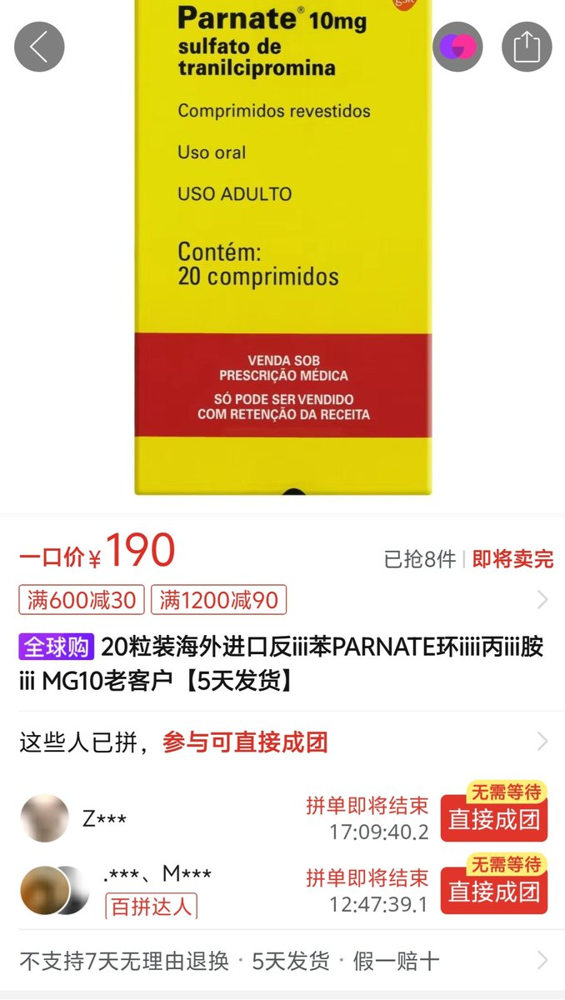

我吸了很多反苯环丙胺，你想啊，没有必要吃哌甲酯，吃反苯就好了，便宜效果强，能嗨能抗衰老还抗炎抗癌，阿里巴巴随便买，反苯你早上吃，晚上差不多就代谢完了，不然你会睡不着，反苯配一堆辅药，耐受性低，可以一直吃一直爽，爽到老😆，我不吃芝士的日子就会吃反苯，反苯的吃法我摸透了，很安全的，不管吃什么，健康是第一位的，然后是嗨加促智，今天吃了反苯及各种表观调节剂，超开心哈，开心得像个孩子捏。不是，我很多次推荐过反苯环丙胺了，怎么不吃，抗抑郁抗衰老，又便宜，有些群友不听劝，不愿意吃药，那我只能说活该了，反苯环丙胺有什么副作用吗？有服用指南吗，我有服用指南，通过合理搭配可以减少副作用，抗抑郁抗衰老，通过合理搭配可以减少副作用，你还要什么自行车，作为抗衰老药性价比很高，能续命这是最重要的，别的都是可以解决的小问题，能强烈干涉信号通路、大幅度改变表观遗传的，单用不可能没有副作用，信号通路都失衡了你说呢，但是通过合理搭配可以减少副作用。成本太高，还是直接吃药，都有我的经验了，你怕什么，你就是太怂了，先吃反苯壮胆，最近又开始尝试CHIR99021和Repsox，反苯也一起吃了，还配了其他表观调节剂，感觉很不错，我吃了反苯会比较爱说话，我们果蝇实验也发现反苯环丙胺和repsox延寿效果不错，反苯环丙胺不抑制HDAC，你健忘症犯了么，而且抑制MAO本身有抗衰老作用，我还是看你发的资料得知的，司来吉兰也有延寿作用，不过司来吉兰功能比反苯少，司来吉兰没有抗炎抗癌作用，反苯是表观遗传药物啊，反苯的衍生物有被开发成癌症药，反苯抑制LSD1，吃反苯肯定要配一堆抗耐受的，里面就有几种降血压的，反苯是最好的抗抑郁药了，国外吃SSRI 没用就会给你吃反苯，反苯可以提高DA，还能抗炎症，反苯还能预防新冠重症呢，可以抑制细胞因子风暴，我每天吃一堆药后，血压会跌倒65以下，然后喝点咖啡拉高，配合反苯，精神更好了，吃反苯配抗耐受配方，不建议吃SSRI，需要血清素的我推荐一律吃反苯，很低不代表没有，不管是反苯、司来吉兰还是哌甲酯，耐受都很快，反苯通过抑制TLR4/ERK减弱了ΔFosB累计的效应，但还是会耐受的，反苯的撤药反应很严重，我第一次吃反苯，吃了几天，当时没有配抗耐受的，不过按我现在这套吃估计没有撤药反应了，你们可以试试，Bomedemstat是反苯的衍生物，抑制LSD1很强，抑制MAO很弱，反苯那么便宜，不吃反苯吃Bomedemstat吗？亏大，靠黄芩素抑制LSD1达到反苯的效果可能得很大剂量一天到晚吃，吃反苯就可以了，有这么便宜的抗衰老药给你吃，不要不知好歹，建议代购印度版反苯，反苯比司来强，反苯抑制MAOA和 MAOB，司来比反苯贵，功能还少点，印度反苯10mg一片代购也就3块，反苯对于炎症引起的抑郁症效果很不错，吃反苯配耐受配方就可以，不够的话加反苯（配抗耐受套餐）
（转自efan）
（转自efan）
